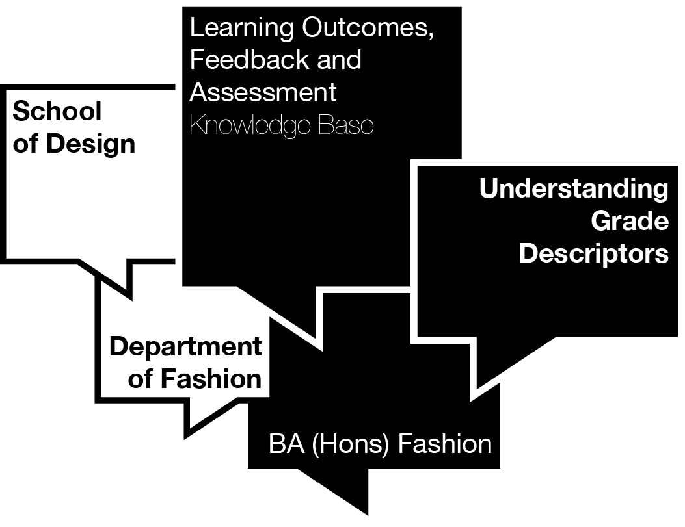

Understanding Grade Descriptors
This interactive guide aims to help you understand the grade descriptors used to assess your work on the BA (Hons) Fashion program. Click on each grade band to see what tutors look for, and to understand the key differences between grade bands. This will help you in your efforts to achieve higher grades, through identifying specific areas for improvement.
How to move up to the next grade band:
Note: This is a visual interpretation of the Kingston School of Art BA (Hons) Fashion grade descriptors. Always refer to the official grade descriptors in your course handbook for definitive guidance.